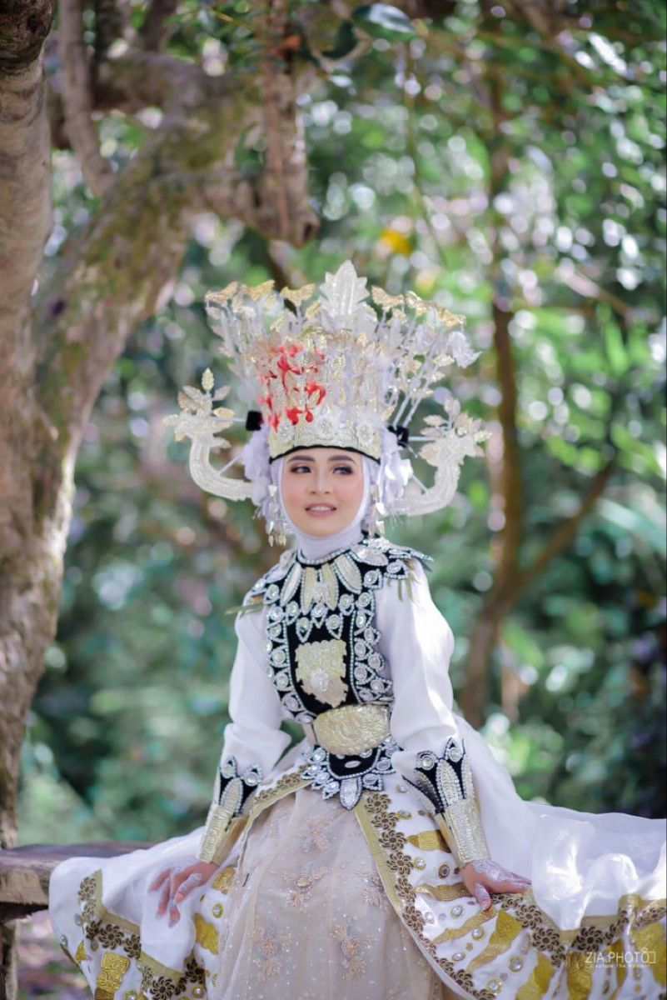
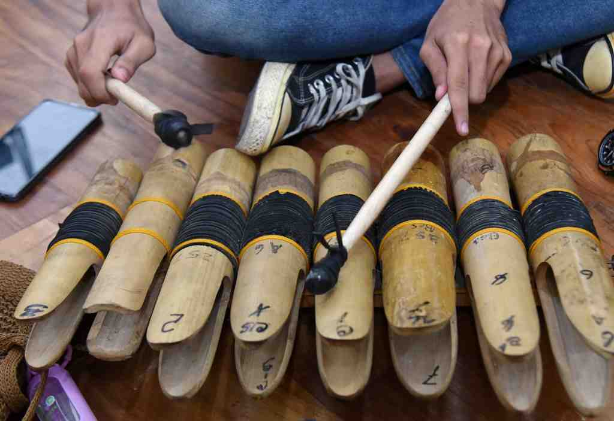
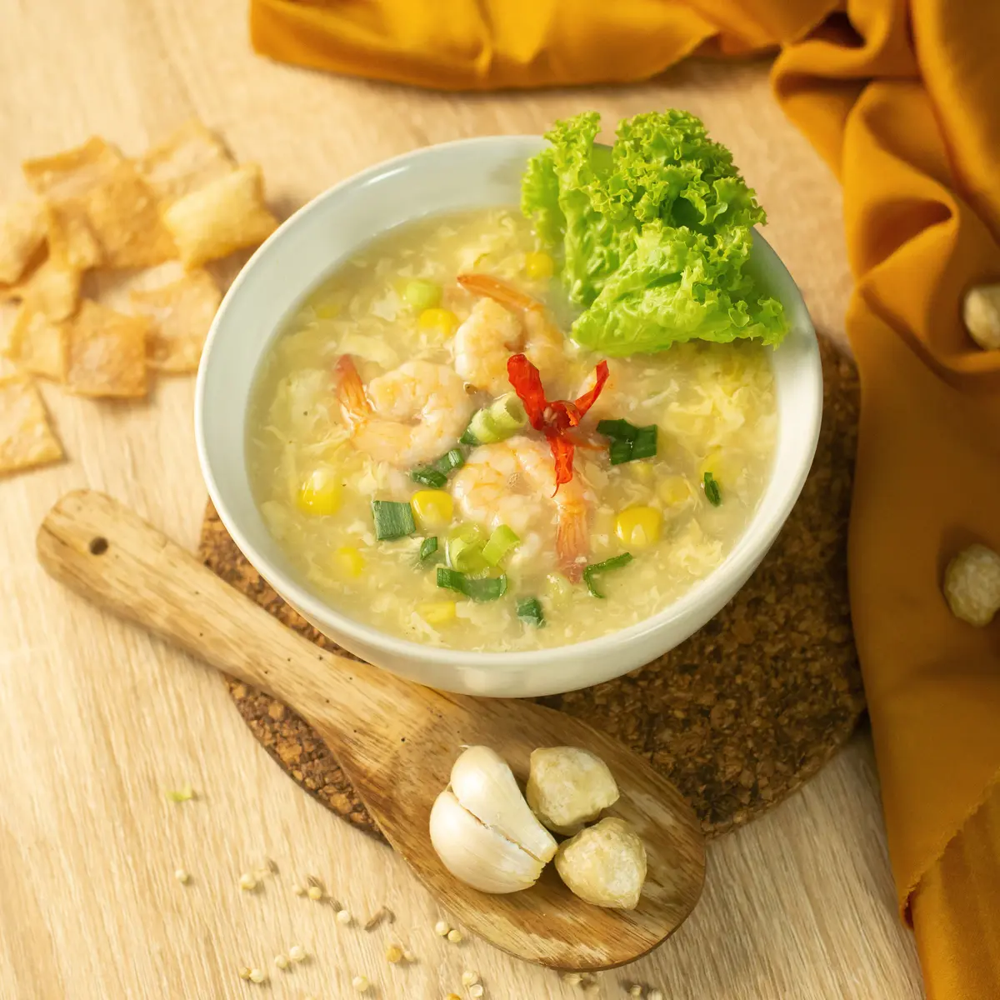

Informasi Daerah
Gorontalo
Gorontalo dikenal dengan julukan "Serambi Madinah" karena nilai-nilai keislaman yang kuat di wilayah ini. Terletak di semenanjung utara Pulau Sulawesi, Gorontalo memiliki sejarah panjang sebagai pusat penyebaran Islam di Indonesia
Timur sejak abad ke-15. Kota ini juga menjadi daerah yang memisahkan diri dari Sulawesi Utara pada tahun 2000 untuk menjadi provinsi mandiri.
Tarian Tradisional
- Tari Polopalo: Tarian khas Gorontalo yang terinspirasi dari alat musik Polopalo, dilakukan dalam berbagai acara adat dan perayaan.
- Tari Saronde: Tarian tradisional yang biasanya dipentaskan dalam prosesi adat pernikahan, melambangkan keakraban dan kebersamaan.
- Tari Langga: Tarian perang yang menggambarkan keberanian dan ketangguhan laki-laki Gorontalo.

Pakaian Adat
- Pakaian Adat Bili'u: Baju adat yang digunakan pengantin wanita, terdiri dari warna-warna cerah seperti kuning, merah, dan ungu, dihiasi dengan perhiasan khas.
- Wapatau: Pakaian adat pria berupa jas panjang dengan corak tradisional, dipadukan dengan sarung dan penutup kepala.
- Makuta dan Saruungi: Perhiasan kepala untuk wanita dan pria yang menjadi simbol keagungan adat Gorontalo.

Alat Musik
Alat musik tradisional Gorontalo meliputi:
- Polopalo: Alat musik tradisional berbentuk tabung bambu yang dimainkan dengan cara dipukul, menghasilkan suara unik.
- Ganda: Gendang tradisional yang digunakan untuk mengiringi tarian adat.
- Gambusi: Alat musik petik yang mirip kecapi, sering dimainkan dalam acara-acara tradisional.
Kuliner
- Binthe Biluhuta (Miluo): Sup jagung khas Gorontalo yang dicampur dengan udang atau ikan, disajikan dengan bumbu segar seperti jeruk nipis dan bawang goreng.
- Ilabulo: Makanan khas berupa campuran sagu dan hati ayam, dibungkus daun pisang, lalu dikukus atau dibakar.
- Sayur Putungo: Hidangan sayur berbahan utama batang pisang muda yang dimasak dengan santan dan rempah-rempah.
- Kue Apang Colo: Kue tradisional berbahan tepung beras yang disajikan dengan taburan gula merah cair.

Pariwisata
Destinasi wisata populer di Gorontalo antara lain:
- Pantai Olele: Spot snorkeling dan diving dengan keindahan terumbu karang dan biota laut yang menakjubkan.
- Benteng Otanaha: Benteng peninggalan kolonial Portugis yang menjadi simbol sejarah Gorontalo.
- Danau Limboto: Danau yang menjadi ikon Gorontalo, terkenal dengan keindahan alamnya terutama saat matahari terbenam.
- Pulau Saronde: Pulau kecil dengan pasir putih dan air laut yang jernih, cocok untuk berkemah dan menikmati keindahan alam.
- Taman Laut Olele: Salah satu destinasi favorit untuk penyelam, menawarkan pemandangan bawah laut yang memukau.